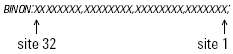
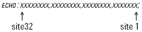

GPIB communication flow for Yokogawa handlers
This section describes the GPIB communication between the driver and the handler.
The table below shows the communication between the driver and the handler. The actions and messages are listed in sequential order.
See Conventions for GPIB communication for descriptions of the syntax.
Message from driver |
Message from handler |
Comment |
|---|---|---|
wait for devices:[SRQ] |
The driver will wait for an SRQ |
|
SRQ: |
|
|
|
SRQ |
Handler returns test start SRQ. |
site population |
|
|
FULLSITES? |
|
Driver asks for the current population. |
|
FULLSITES n |
Handler returns bit coded site population. |
bin devices: |
||
 |
|
Driver send bin information x is data of each site: - A: no data - 1 to 8: bin 1 to 8 |
|
 |
Handler returns bin information |
ECHOOK |
|
Driver confirms bin information is correct |
ECHONG |
|
ECHOed bin data was not correct. In the case where a ECHONG was sent back to the handler the BINON command is repeated and an ECHO is waited for. If the ECHOed bin information is again incorrect a last ECHONG is sent and error message is displayed. |